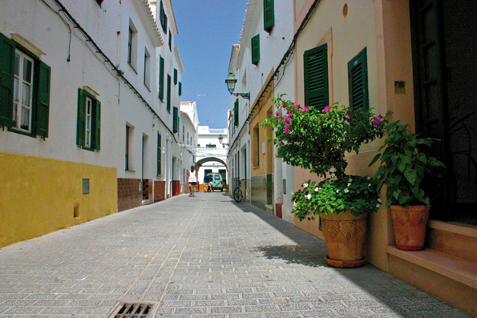

Es Migjorn Gran, tranquillo e accogliente
 Gran verità: Es Migjorn Gran è una popolazione tranquilla e accogliente. I suoi abitanti sono persone amabili e simpatiche. Le sue strade e piazze mostrano l'incanto di un luogo per il quale è piacevole passeggiare lentamente, ammirando le sue case, negozi, giardini, edifici... O qualche bambino giocando senza preoccupazione negli spazi pubblici.
Gran verità: Es Migjorn Gran è una popolazione tranquilla e accogliente. I suoi abitanti sono persone amabili e simpatiche. Le sue strade e piazze mostrano l'incanto di un luogo per il quale è piacevole passeggiare lentamente, ammirando le sue case, negozi, giardini, edifici... O qualche bambino giocando senza preoccupazione negli spazi pubblici.
La costruzione più imponente della villa è la chiesa parrocchiale, situata nel centro del nucleo urbano, dividento la piazza con il comune ed una agenzia bancaria.
Migjorn Gran si trova fuori dal percorso della strada principale dell'isola, l'arteria che unisce Mahon e Ciuttadella, passando successivamente per i paesi di Alaior, Mercadal e Ferreries. Si accede ad Es Migjorn Gran per una strada secondaria che comincia in un punto determinato del ramo della riferita strada, tra Alaior e Mercadal; o meglio direttamente dai paesi vicini di Ferreries o Mercadal.
Chissà che questa ubicazione fisica, un po' al margine della principale via di comunicazione terrestre di Minorca, aiuti a potenziare il carattere peculiare e la idiosincrasia del popolo e, sopratutto della sua gente.
La gran virtù del municipio è proprio questa dualità: essere un paese piccolo, con appena un migliaio e mezzo di abitanti, e, alla volta, godere di molti servizi: comune proprio, spiagge eccellenti e con poco meno di cinque minuti in auto, il centro sanitario, scuola completa (fino ai dodici anni), asilo nido (da 0 a anni) centro di attenzione per persone anziane, farmacia, servizio taxi, zona sportiva con campo di calcio, campi tennis, palazzo polisportivo, ginnastica, calcio sette, rugby... Insieme ad una grande offerta di negozi (tra i quali, due fornai, due macellerie e due supermercati), bar e ristoranti; anche un hostal e un hotel rurale. Nella periferia, la popolazione è dotata di una piccola zona industriale, dove si situano la maggioranza delle imprese degli abitanti: falegnameria, meccanica, autocarri e minibus, calzaturificio, ferramente, corrieri, contrattisti di costruzioni, pittori, idraulici, elettricisti...
In oltre, il grado di associazioni è molto alto, avendo presente che il numero degli abitanti si mantiene intorno ai 1500: Amici dell'Arte, Banda Musicale, Associazione Culturale, Club Sportivo, Associazione pensionati, Associazione di madri e padri degli alunni, Gruppo Folcloristico, Club Ippico, Club Agility, ecc.
Il municipio di Es Migjorn Gran è ubicato nella parte centrale del sud dell'isola di Minorca. Il paese nacque 250 anni fa per la ferma volontà dell'Unione dei residenti stabiliti in differenti punti della zona, convertendosi in Comune indipendente nel 1989, oggigiorno sono già 25anni.
Anche se il settore primario statisticamente rimane lontano dal secondario e, soprattutto, dal terziario, Es Migjorn continua avendo alcune proprietà in attivo, fatto che contribuisce alla corretta conservazione del paesaggio rurale ed agrario. In oltre delle piccole strade che formano il nucleo antico del centro, negli ultimi quaranta anni la località è andata crescendo con la costruzione della Piazza Minorca, Piazza Maestro Andreu Ferrer, Avenida Binicudrell, Avenida de la Mar, Avenida David Russell, ecc.
Es Migjorn Gran è molto conosciuta in tutta Minorca per il suo alto livello musicale. Oltre la metà dei bambini in età scolare si formano nella Scuola di musica Municipale; esistono oltre la allusa e arcifamosa Banda di Musica, la Corale Parrocchiale, la Corale, vari gruppi musicali, la banda di trombe e tamburi, ecc. Giustamente il grande artista della chitarra classica David Russell, passò tutta la sua infanzia ad Es Migjorn Gran.
 Concludiamo la rassegna su Es Migjorn Gran, segnalando due dei punti forti: gli insiemi talaiottici e le spiagge del termine municipale. Dei primi, si sà che Es Migjorn è il comune con più densità di monumenti megalitici. Bisogna mettere in risalto i due talaiot di Binicufrell, situati tra la scuola pubblica Francesc d' Alhranca e il cimitero; quello situato nel predio di Santa Monica; il popolato di Sant Agustì Vell; la sala ipostila di Binigaus Nou... e un lunghissimo ecc.
Concludiamo la rassegna su Es Migjorn Gran, segnalando due dei punti forti: gli insiemi talaiottici e le spiagge del termine municipale. Dei primi, si sà che Es Migjorn è il comune con più densità di monumenti megalitici. Bisogna mettere in risalto i due talaiot di Binicufrell, situati tra la scuola pubblica Francesc d' Alhranca e il cimitero; quello situato nel predio di Santa Monica; il popolato di Sant Agustì Vell; la sala ipostila di Binigaus Nou... e un lunghissimo ecc.
In quanto alle seconde, il municipio conta esattamente con sette, solamente una delle quali, Santo Tomas, è urbanizzata. Così che, insieme al nucleo turistico di Santo Tomas, possiamo godere delle spiagge di Atalis (situata nell'est), San Adeodato, Binigaus, Cala Escorxada, Cala Fustam e Trebaluger. Santo Tomas conta con un'ampia offerta, tanto residenziale come di ristorazione, con una preziosa passeggiata marittima, con servizi medici permanenti durante i sei mesi estivi e con labfarmacia tutto l'anno.
Finalmente, è obbligatorio cedere l'onore alla ultima menzione alla frequentemente visitata Cova des Coloms, nel canalone di Binigaus. Si tratta di una grotta naturale di dimensioni poco comuni: 110 metri di lungheza, 15 di larghezza e... 24 di altezza! Per quello si conosce con il soprannome La Cattedrale. La Grotta si trova nascosta nella rupe orientale del canalone di Binigaus. L'accesso a questa magna opera della natura è oggigiorno, correttamente segnalata.
In sommatorio, visitare e conoscere Es Migjorn Gran è sinonimo di prendere contatto con una popolazione viva e dinamica e, allo stesso tempo, tradizionale e moderna. È, in definitiva, scoprire un popolo autentico.